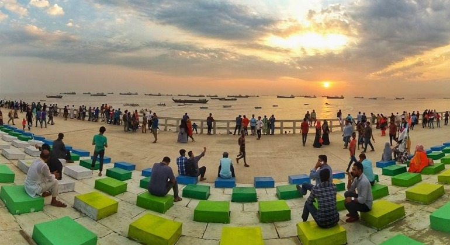

পতেঙ্গা সমুদ্র সৈকত (Patenga Sea Beach) বাংলাদেশের সুন্দর ও জনপ্রিয় সমুদ্র সৈকতগুলোর মধ্যে অন্যতম। চট্টগ্রাম থেকে মাত্র ১৪ কিলোমিটার দূরত্বে অবস্থিত এই সমুদ্র সৈকতে সহজেই যাওয়া যায় বলে পর্যটকদের কাছে জনপ্রিয়তা দিন দিন বাড়ছেই। এছাড়া এই সৈকতকে আরও আকর্ষণীয় করে তোলার জন্যে বেশ কিছু পরিকল্পণা বাস্তবায়িত হচ্ছে। ৫ কিলোমিটার দৈর্ঘ্যের পতেঙ্গা সৈকতকে আধুনিক ও বিশ্বমানের পর্যটন কেন্দ্র গড়ে তোলার লক্ষ্যে কাজ চলছে। ইতিমধ্যে সম্পন্ন হওয়া দৃষ্টিনন্দন সাজসজ্জা নজর কেড়েছে সবাইকে।
 Click here to visit page 2বাংলাদেশের প্রতিটা প্রান্ত থেকেই সড়ক কিংবা রেলপথে পতেঙ্গায় খুব সহজে আসা যায়। সড়কপথে ঢাকা হতে ইউনিক, সৌদিয়া, শ্যামলী, হানিফ, সোহাগ, এস, আলম প্রভৃতি বাসের এসি/ননএসিতে আসতে পারেন। আর ট্রেনে আসতে চাইলে সুবর্ণ, সোনারবাংলা, তুর্না নিশিথা, মহানগর প্রভাতী/গোধূলি এক্সপ্রেসগুলোতে এসে ঘুরে যেতে পারেন।